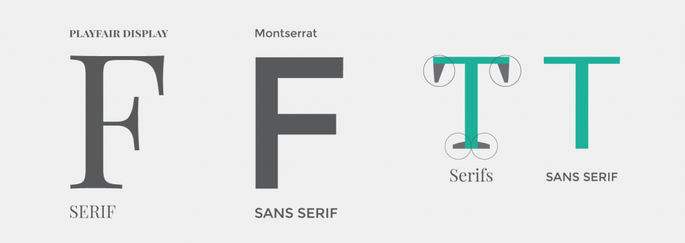

Fonts
Fonts are an important way to display information on a webpage. Decorative fonts like Fredoka One, Righteous, or Lobster are great for headers or logos. As suggested by the name, people should avoid using decorative fonts in areas where content is lengthy because it may cause eye strain, and there are easier to read and better reading fonts. Decorative fonts should just catch the viewer’s attention to visit an article and read the main content.
For reading fonts, there are two generic types, Sans Serif and Serif. Sans Serif is great for headings, headlines, and titles. They tend to look better when used in large font and bolded. For lengthier bodies of text, it is generally better to use a Serif font because the added strokes on each character make them more distinct from each other, which makes them more recognizable. However for my blog post, I chose to use the Sans Serif font, Source Sans Pro, because I believe it looks more modern and less like a science report.
Fonts.google.com has hundreds of fonts people can choose form and use on their own websites. A link tag and the appropriate CSS to use the fonts are provided with all selected fonts. Here is an example of the link tag of this html document.
<link href="https://fonts.googleapis.com/css2?family=Fredoka+One&family=Lobster&family=Righteous&family=Source+Sans+Pro:wght@300;400&display=swap" rel="stylesheet">
Source 1: W3 CSS Fonts
Source 2: 7 Things To Remember When Selecting Fonts For Your Design
Source 3: Serif VS Sans Serif Fonts
Source 4: Sans Serif Vs Serif Font — Which Should You Use & When
Source 5: Google Fonts